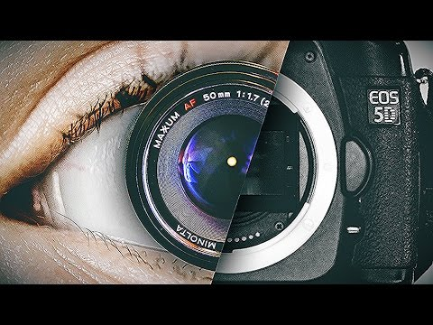

THE CAMERA- AN OVERVIEW
Martina Vella - DGA1019
Introduction:
The camera is a device for recording an image of an object on a light-sensitive surface; It is essentially a light-tight box with an aperature to admit light focused onto a sensitized film or plate.
It helps us create and preserve memories of historical and/or sentimental value.
Human Sight VS The DSLR Camera
Human Sight:
- Fixed point of view
- Fixed lens
- Wide field of view, with no distortion
- Infinite focus
- Greater sensitivity to light
- Smart 'auto-correct'

In comparision-The DSLR CAMERA
- Choice in point of view
- Interchangeable lenses
- Variable Focus
- Reduced sensitivity to light
What to keep in mind whilst using a camera:
- Aperture
- Shutter Speed
- ISO
The ISO controls the amount of light by the sensitivity of the sensor. On the other hand, the shutter speed controls the amount of light by the length of time. Last and not least, the aperture, which refers to the size of the lens opening, controls the amount of light by the intensity via a series of different sized openings.
For more information, visit this webpage to learn more on how you can use ISO, shutter speed and aperture